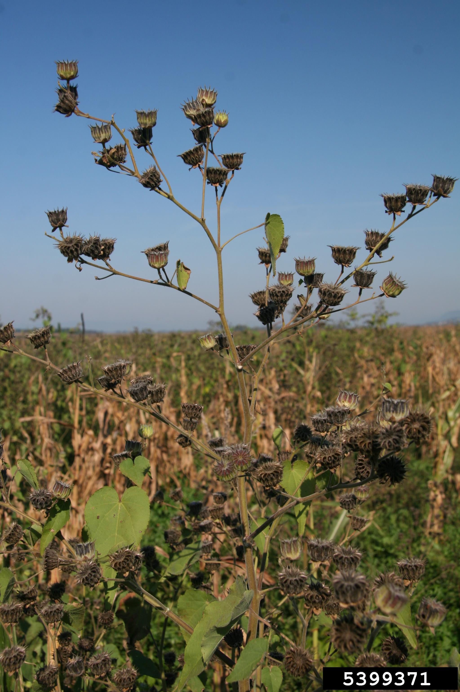

Weeds
Biennial
Burdock
| Name | Burdock |
| Category | alternate |
| Life Cycle | biennial |
| Description | Plant is a basal rosette the first year, with branched stems the second. Leaves are large, heart-shaped, and have wavy margins. Top leaf surface is smooth and bottom hairy. Purple flowers produced the second year. |
| Seedling | Cotyledons are ovate with waxy surface. Young leaves egg-shaped longer chaped with long red-purple petioles. |
| Alternative Name | Cockle button |
| Latin Name | Arctium minus |
| Citation | http://weeds.cropsci.illinois.edu/images/Common%20burdock/index.htm |


Perennial
Canada Thistle
| Name | Canada thistle |
| Category | alternate |
| Life Cycle | perennial |
| Description | Lobed, spiny, oblong, alternate leaves. Rhizome up to 3 feet (1 meter) deep. Stems are grooved and smoth-slightly hairy. Flowers are pinkish and plants dioecious. |
| Seedling | Cotyledons are oval and light green color. Early leaves are think and longer, lanceolate shape with short hairs. Leaf margins are wavy lobed with spines. Shoots from the rhizome do not form cotyledons, but do form rosettes. |
| Alternative Name | Creeping thisle, Green thistle |
| Latin Name | Cirsium arvense |
| Citation | http://weeds.cropsci.illinois.edu/images/CanadaThistle/index.htm |


Curly Dock
| Name | Curly dock |
| Category | alternate |
| Life Cycle | perennial |
| Description | Large narrow leaves in basal rosette with flowering stem in the middle. Stems are smooth, ridged, and may be red. Leaves are alternate and have wavy margins. Flowers are greenish and turn dark red when they mature. Flowers occur in clusters near the top of the stem. |
| Seedling | Stems red-maroon at the base. Cotyledons spatulate shape (rounded at apex and narrow at the base). Cotyledons are on petioles and without hairs. Early leaves have some reddish patches and shape is a basal rosette. |
| Alternative Name | Sour dock, yellow dock |
| Latin Name | Rumex crispus |
| Citation | http://weeds.cropsci.illinois.edu/images/Curly%20dock/index.htm |


Dandelion
| Name | Dandelion |
| Category | basal |
| Life Cycle | perennial |
| Description | Taproot plant that exudes white substance when injured. Rosette leaves that are oblong with wavy, deeply lobed margins. Leaves have irregular teeth and stems are present on younger leaves. Flowers are yellow and form on end of stalks. Seeds attached to a feathery pappus for wind dispersal. |
| Seedling | Cotledons light green, oval shaped and smooth. Early leaves form a basal rosette (shape is spatulate or oval). Young leaves 2-6 inches (5-15 cm) long. |
| Latin Name | Taraxacum officinale |
| Flowering Start | April |
| Flowering End | October |
| Citation | http://weeds.cropsci.illinois.edu/images/Dandelion/index.htm https://cropwatch.unl.edu/2020/identifying-fall-emerging-weeds |
Dogbane
| Name | Dogbane |
| Category | opposite |
| Life Cycle | perennial |
| Description | Tall, shrubby upright plant and exude a milky juice when injured. Stems are reddish. Leaves are opposite and ovate with a pointed tip, smaller than milkweed. Roots are white and fleshy, also has rhizomes. Flowers are green-white and located in clusters at the end of stems. Fruit are 4- to 8-inch-long, narrow, reddish brown, sickle-shaped capsules. |
| Seedling | Usually no cotyledons present, since plants arise from the rhizome. Cotyledons round, oval, and thick. Young leaves are oppositely arranged and smooth. Hypocotyl typically purple. |
| Alternative Name | Indian hemp, Hemp dogbane |
| Latin Name | Apocynum cannabinum |
| Citation | http://weeds.cropsci.illinois.edu/images/Hemp%20dogbane/index.htm https://mdc.mo.gov/discover-nature/field-guide/indian-hemp-dogbane |
Summer Annual
Burcucumber
| Name | Burcucumber |
| Category | alternate |
| Life Cycle | summer annual |
| Description | Plant is viney with branching tendrils. Leaves alternate and round to heart-shaped with 5 lobes and tothed margins. Stems hairy and prickly. Roots fibrous and flowers yellow with 5 petals. Small cucumber-like fruits 3/4 inch (2 cm) long. |
| Seedling | Hypocotyls covered with short hairs. Cotyledons are thick and round with dense hairs present on top and bottom. |
| Alternative Name | Star cucumber |
| Latin Name | Sicyos angulatus |
| Citation | http://weeds.cropsci.illinois.edu/images/Burcucumber/index.htm |


Common Cocklebur
| Name | Common cocklebur |
| Category | alternate |
| Life Cycle | summer annual |
| Description | Tall branched plant with purple speckled stem and large taproot. Leaves are alternate with a rough surface. Triangular shape and serrated margins and often 3 prominent veins. Flowers formed in burs that are brown, woody and very prickly. 2 seeds are contained within each bur. |
| Seedling | Hypocotyls are purple at the base. Cotyledons thick and fleshy with lanceolate shape. |
| Alternative Name | Clotbur |
| Latin Name | Xanthium strumarium |
| Citation | http://weeds.cropsci.illinois.edu/images/Cocklebur/index.htm https://www.ilsoyadvisor.com/on-farm/ilsoyadvisor/identifying-troublesome-broadleaf-weeds-soybeans |


Common Ragweed
| Name | Common ragweed |
| Category | broadleaf |
| Life Cycle | summer annual |
| Description | 0.2-2.5 m tall and high pollen producer. Leaves are 4 to 10 cm long, egg shaped and hairy on the upper surface and dense on lower surface. Stems are erectwith long, rough hairs. Flower heads are small, 2-4 m and occur in long narrow racemes. Fruit is a woody, red-brown, achene. |
| Seedling | Seedling hypocotyls are green and spotted purple. Cotyledons are round-oblong and purple underneath. Young leaves are opposite and become alternate with age and dense hairs covering. |
| Latin Name | Ambrosia artemisiifolia |
| Citation | https://weedid.missouri.edu/weedinfo.cfm?weed_id=17 |


Eastern Black Nightshade
| Name | Eastern black nightshade |
| Category | broadleaf |
| Life Cycle | summer annual |
| Description | Erect plant reaching over 1 foot tall (0.3 m). Leaves are purple-maroon on underside. Leaf margins entire, with some blunt teeth and are simple and alternate with ovate shape. Leaves often slightly hairy. Stems are branching and round or angular shaped, become woody with age. Flowers star-shaped white or purple-tinged in clusters of 5-7. Fruit are small green (immature) and purple-black berries 5-12 mm in diameter. |
| Seedling | Stems below the cotyledons covered with hairs. Cotyledons green on upper surface and purple-maroon on the lower. |
| Alternative Name | Black nightshade |
| Latin Name | Solanum ptycanthum |
| Citation | https://weedid.missouri.edu/weedinfo.cfm?weed_id=270 |


Giant Foxtail
| Name | Giant foxtail |
| Category | grassy |
| Life Cycle | summer annual |
| Description | Common weed throughout the U.S. that forms in clumps. Leaf blades reach up to 16 inches (40 cm) in lenght and up to 1 inch (25 mm) thick. Stems are erect, hairless, and up to 4 feet (1.2 m) tall. Flowers are cylindrical panicles with spikelets about 1/8 inch (3mm) long w/1-3 bristles. The seedhead droops when it matures and many hairs on the upper leaf surface. |
| Seedling | Seedlings have leaves rolled in a bud and leaf sheaths mostly without hairs. Leaf blades may have short hairs on the upper surface and near the margins. The ligule of the seedling consists of small hairs 1/16 inch (0.5 mm) long. |
| Latin Name | Setaria faberi |
| Citation | https://weedid.missouri.edu/weedinfo.cfm?weed_id=256 |


Giant Ragweed
| Name | Giant ragweed |
| Category | opposite |
| Life Cycle | summer annual |
| Description | Tall plant growth up to 0.5-8 feet (0.2-2.5 m) tall. Leaves are 1.5-4 inches (4-10 cm) long, egg-shaped, and compound. Leaves hairy on upper surface and and dense on lower surface. Stems are tall and branched with long hairs. Flowers are small 1/16-1/6 inch (2-4 mm) and green near the end of branches. |
| Seedling | Hypocotyl stems green and spotted purple. Cotyledons are roundish/oblong and purple underside. Young leaves opposite, but become alternate over time and hairs. |
| Alternative Name | Ragweed |
| Latin Name | Ambrosia trifida |
| Citation | https://www.ilsoyadvisor.com/on-farm/ilsoyadvisor/identifying-troublesome-broadleaf-weeds-soybeans |


Lambsquarters
| Name | Lambsquarters |
| Category | alternate |
| Life Cycle | summer annual |
| Description | Planth grows to about 3.5 feet (1.1 m). Leaves alternate, light green color and a rounded to triangular shape. Leaf length is 1.25 to 10 inches (3.2 to 25 cm). Stems are tall, hailess, and have light green and some red coloration. Flowers are in panicles at the end of branches, color green and without petals. Taproot is short and branched. |
| Seedling | Cotyledon elliptic 12-15 mm long, green-gray on upper surface. Cotyledons have no prominent midvein (unlike redroot pigweed). Hypocotyls hairless green or slightly red. First pair of leaves opposite and traingular. |
| Latin Name | Chenopodium album |
| Citation | https://weedid.missouri.edu/weedinfo.cfm?weed_id=60 |

Large Crabgrass
| Name | Large crabgrass |
| Category | grassy |
| Life Cycle | summer annual |
| Description | Densely hairy leaf and sheath with a large membrane-like ligule. Leaves up to 8 inches (20 cm) long and 1/8-3/8 inches (3-10 mm) wide. Ligules around 1-2 mm long and are membranous with a flat end with uneven teeth. Leaf sheaths turn dark red or maroon with age. Stems are upright or sometimes prostrate and flat, spreading and branched at the nodes. Flowers are a seed head composed of 4-6 spikes, each about 1.5-7 in (3.8-18 cm) long. Root system is fibrous. |
| Seedling | Seedlinghave sheaths and blades with a densely hairy, membranous ligule. Seedlings upright with leaves rolled into the bud. First leaf blade is lanceolate to linear. |
| Latin Name | Digitaria sanguinalis |
| Citation | https://weedid.missouri.edu/weedinfo.cfm?weed_id=89 |


Morningglory
| Name | Morningglory |
| Category | alternate |
| Life Cycle | summer annual |
| Description | Plant growth is viney/climbing along the ground and vegetation and taproot. Leaves are 3 lobed, alternate and 2 to 5 inches (5 to 13 cm) long, with erect hairs. Stems run along the ground or climbing for up to 10 feet long, with hairs. Flowers are 1 to 2 inches (25 to 50 mm) long purple-blue and white in color. |
| Seedling | Cotyledons are indented, notched at the top and are very small. Cotyledons shallowly. |
| Alternative Name | Ivyleaf Morningglory |
| Latin Name | Ipomoea hederacea |
| Citation | https://www.ilsoyadvisor.com/on-farm/ilsoyadvisor/identifying-troublesome-broadleaf-weeds-soybeans |
Palmer Amaranth
| Name | Palmer amaranth |
| Category | alternate |
| Life Cycle | summer annual |
| Description | Tall, erect plant growth habit up to 6.5 feet (2 m) tall. Leaves alternate with no haris, and are lance- or egg-shaped. Leaves are 2-8 inches (5-20 cm) and up to 2.5 inches (6 cm), white veins on underside. Leaves are on long petioles. One central stem occurs from which lateral branchs come off. Flowers are small and green in tightly packed panicles, with some in leaf axils as well. |
| Seedling | Hypocotyl stems typically have no hairs and are red in color. Cotyledons are narrow up to a 1/2 inch long (12 mm) and green-red color on top surface. Cotyledon lower surface have reddish tint. First true leaves are alternate, ovate in shape and slightly notched at the tip. |
| Alternative Name | Palmer pigweed |
| Latin Name | Amaranthus palmeri |
| Citation | https://weedid.missouri.edu/weedinfo.cfm?weed_id=14 |


Purslane
| Name | Purslane |
| Category | opposite |
| Life Cycle | summer annual |
| Description | Plant grows as a prostrate succulent and tolerates drought. Leaves alternate or opposite, 1/4-1.25 inches (6-32 mm) long. Leaves spatulate (round at apex and narrow at base). Leaves thick, succulent, and have smooth margins. Stems are succulent, smooth, and prostrate with branching and no hairs. Flowers are yellow with 5 petals, about 3/16-3/8 inch (5-10 mm) wide. Flowers found in leaf axil or end of branches. |
| Seedling | Cotyledons long and succulent with no hairs. Young leaves opposite and maroon to red on lower surface. |
| Latin Name | Portulaca oleracea |
| Citation | https://weedid.missouri.edu/weedinfo.cfm?weed_id=228 |
Redroot Pigweed
| Name | Redroot pigweed |
| Category | alternate |
| Life Cycle | summer annual |
| Description | Tall plant growthup to 6.5 feet (2 m) tall. Leaves alternate and ovate shape with petioles about 1/2 inch (12 mm) in length. Leaves with wavy margins and hairs on lower leaf surface. Stems tall and branched with few short hairs on upper stem. Flowers smal and green at end of panicles and in leaf exils. Roots are a shall taproot, usually red in color. |
| Seedling | Hypocotyl stem usually without hairs and red in color near the base. Cotyledons narrow around 1/2-3/8 inch (10-12 mm) in width and green-red on top. Cotyledon lower surface reddish tint. Young leaves are alternate and ovate in shape and slight notch at the apex. |
| Latin Name | Amaranthus retroflexus |
| Citation | https://weedid.missouri.edu/weedinfo.cfm?weed_id=15 |


Velvetleaf
| Name | Velvetleaf |
| Category | alternate |
| Life Cycle | summer annual |
| Description | Tall plant growth habit. Leaves alternate, heart shaped with a pointed tip. Leaves 2-6 inches (5-15 cm) long with hairsand toothed margins. Leaves have palmate veneation and exude bad odor when crushed. Stems tall up to 7 feet (2.1 m) tall and covered with hairs. Flowers have yellow-orange petals and on short stalks and 1/2-1 inch (12-24mm) wide. |
| Seedling | Hypocotyl stems have soft hairs. 1 cotyledon is heart-shaped and one is round, covered with short hairs. First leaves are alternate, heart-shaped, and have toothed margins. |
| Latin Name | Abutilon theophrasti |
| Citation | https://weedid.missouri.edu/weedinfo.cfm?weed_id=1 |

Waterhemp
| Name | Waterhemp |
| Category | alternate |
| Life Cycle | summer annual |
| Description | This pigweed species is slender and erect seedling with green or reddish foliage. Leaves alternate and variable shaped from ovate to lanceolate or oblong. Leaves are waxy and have a short petiole compared to redroot pigweed. Stems lacking pubescence and has fibrous roots and taproot. Seeds are small around 1/8 inch (3 mm) long. Glyphosate, and PPO resistance populations have been found. |
| Seedling | Seedling leaves are oar shaped. First leaves are lance shaped and have a small notch at the tip of the leaf. Stems are red. |
| Alternative Name | Common waterhemp, Tall Waterhemp |
| Latin Name | Amaranthus rudis |
| Emergence Start | 2022-05-15 |
| Emergence End | 2022-07-30 |
| Citation | https://www.ilsoyadvisor.com/on-farm/ilsoyadvisor/identifying-troublesome-broadleaf-weeds-soybeans https://ipcm.wisc.edu/download/weeds/Waterhemp-Fact-Sheet-Final-Draft.1_2.pdf https://weedid.missouri.edu/weedinfo.cfm?weed_id=319 |
Yellow Foxtail
| Name | Yellow foxtail |
| Category | grassy |
| Life Cycle | summer annual |
| Description | Clumping weed that looks similar to Giant foxtail. Leaf blades up to 12 in (30 cm) long and 7-12mm in width. Leaves have long silky hairs at the base only. Ligule is a fringe of hairs up to 2 mm in length. Stems are erect, flattened without hairs, wth a red tint at the base (up to 3 ft or 1 m tall). Flowers are a panicle up to 6 in (15 cm) long. Spikelets around 3 mm long that turn yellow at maturity. Roots are fibrous. |
| Seedling | Leaves are in the bud and sheaths without hairs. On the upper surface near the base, there are some long silky hairs. Ligule is fringe of hairs about 1/2 mm long. |
| Latin Name | Setaria glauca |
| Citation | https://weedid.missouri.edu/weedinfo.cfm?weed_id=257 |


Winter Annual
Common Vetch
| Name | Common vetch |
| Category | alternate |
| Life Cycle | winter annual |
| Description | Slender and viney plant growth. Has narrow leaflets and tendrils at the end of leaves. Stems climb on other vegetation and the ground and grow up to 3.5 feet (1.1 m). Flowers are in pairs on stalks and are 0.75 to 1.25 inch (19 to 32 mm) long. Flowers are usually purple, but are sometimes white. |
| Seedling | No cotyledons. First leaves are 1 pair of opposite, linear leaflets. |
| Alternative Name | Garden vetch, Oregon vetch |
| Latin Name | Vicia sativa |
| Citation | https://content.ces.ncsu.edu/common-vetch#:~:text=Common%20vetch%20(Vicia%20sativa)%20is,the%20ends%20of%20the%20leaves. https://weedid.missouri.edu/weedinfo.cfm?weed_id=307 |


Henbit
| Name | Henbit |
| Category | opposite |
| Life Cycle | winter annual |
| Description | Small branched plant with opposite leaves and fibrous roots. Leaves with veins and crinkled with soft hairs on upper surface. Lower leaves on petioles, while upper leaves are sessile and deeply lobed. Stems are square and green-purple colored. Pink and purple flowers in April, but possibly in March or November too. Flowers in whorls and sepals have 5 teeth. Fruits are egg-shaped and have white spots, producing around 200 seeds. |
| Seedling | Cotyledons oval, 1/8 to 1/2 inch (3-12mm) long. Lower stems become purple over time. Base of the cotyledon is notched where the petiole joins. Young leaves are on petiole and circle-heart shaped with a crinkly upper side. Hairs on upper leaf surface and near veins of lower leaf. |
| Alternative Name | Dead nettle, blind nettle |
| Latin Name | Lamium amplexicaule |
| Flowering Start | March |
| Flowering End | May |
| Citation | http://weeds.cropsci.illinois.edu/images/Henbit/index.htm https://cropwatch.unl.edu/2020/identifying-fall-emerging-weeds |
Mallow
| Name | Mallow |
| Category | alternate |
| Life Cycle | winter annual |
| Description | Leaves round on a long petiole and short hairs. Margins are rounded and crinkled. Roots are a taproot with some secondary fiberous roots. White to purple five petal flowers and fruits look like small buttons. |
| Seedling | Cotlyedons heart-shaped, 3/16- 1/4 inch (5-7 mm) long and 1/ inch (3 mm) wide. 3 main veins and hairy. Young leaves are alternate, crinkled, and circular with a toothed margin and hairs. |
| Alternative Name | Button weed, Round leaf mallow, Round dock |
| Latin Name | Malva neglecta |
| Citation | http://weeds.cropsci.illinois.edu/images/Common%20mallow/index.htm |
Marestail (Horseweed)
| Name | Marestail (Horseweed) |
| Category | alternate |
| Life Cycle | winter annual |
| Description | Basal rosette plant, with stem reaching up to 6 feet (2 meters) tall. Found in disturbed areas/no-till fields. Leaves at the base slightly toothed about 2-3 inches (5-7.5 cm) long. Leaves alternate, linear, and simple and get smaller higher on the plant. Panicle of flowers are white about 1/16 inch (1.5 mm) to 1/8 inch (3 mm) long. Can be winter annual(fall emergent) or summer annual (spring emergent). |
| Seedling | Cotyledons oval and about 1/16 to 1/5 inch (2-3 mm) long. Young leaves are egg-shaped with a toothed margin and are hairy. |
| Alternative Name | Horseweed, Canadian Horseweed |
| Latin Name | Conyza canadensis |
| Emergence Start | 2022-04-15 |
| Flowering Start | June |
| Flowering End | September |
| Citation | https://crops.extension.iastate.edu/encyclopedia/horseweed-marestail https://www.extension.purdue.edu/extmedia/gwc/gwc-9-w.pdf https://www.ilsoyadvisor.com/on-farm/ilsoyadvisor/identifying-troublesome-broadleaf-weeds-soybeans https://cropwatch.unl.edu/2020/identifying-fall-emerging-weeds |
/1.jpg)
/2.jpg)
/3.jpg)
/4.jpg)
/5.jpg)
/6.jpg)
/7.jpg)
Wild Mustard
| Name | Wild mustard |
| Category | alternate |
| Life Cycle | winter annual |
| Description | Upright plant growth habit. Taproot thin and branched, also with fibrous roots. Leaves egg-oval shaped, alternate, stiff hairs and deep veins. Lower leaves of the mature plant have long petioles, lobes, and are the widest. Upper leaves are less hairy, less lobes and sometimes toothed edges, short petioles. Flowers are in raceme clusters on end of branches about 13/32 inch (1.5 cm). Flowers have 4 yellow petals up to 1/2 inch (12 mm) long. |
| Seedling | Cotyledons are kidney-heart shaped and 3/16 inch (5 mm) long and 5/16 inch (8mm) wide. Cotyledon tip has a slight indent. Young leaves are oblong or egg-shaped, alternate, with wavy-toothed edges, stiff hairs. |
| Latin Name | Brassica kaber |
| Citation | https://blogs.cornell.edu/weedid/wild-mustard/ https://weedid.missouri.edu/weedinfo.cfm?weed_id=263 |